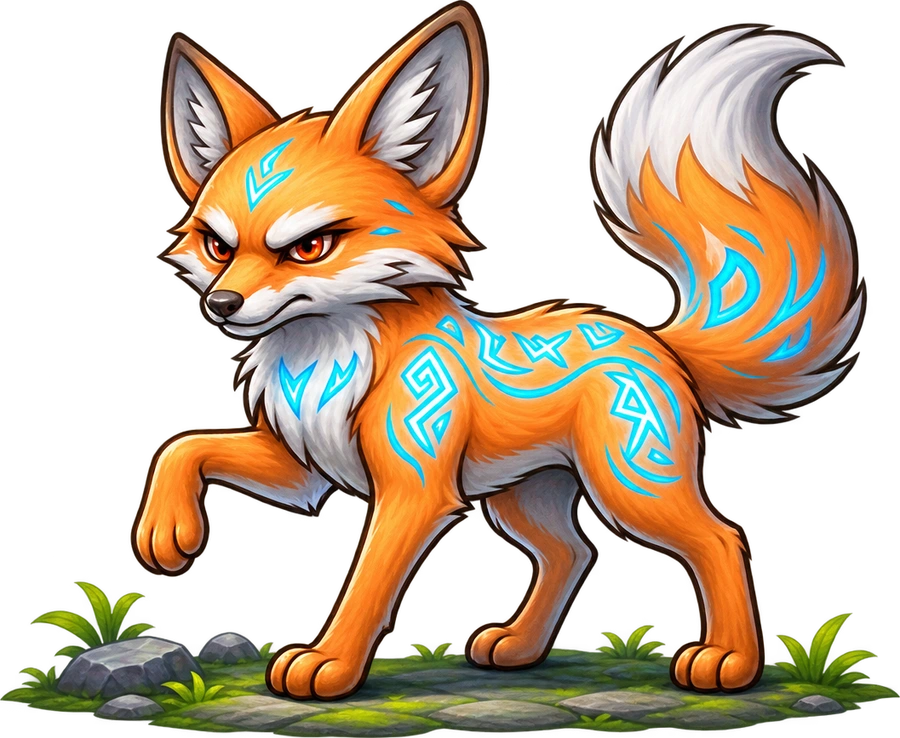

Původní

Vlídnější

Základ pro další podoby. Oči, obočí a úsměv jsou vlídnější; zachováváme původní propracovaný styl. Nové animace počkají na schválení všech podob.
VÝTVARNÉ SROVNÁNÍ · V3

Základ pro další podoby. Oči, obočí a úsměv jsou vlídnější; zachováváme původní propracovaný styl. Nové animace počkají na schválení všech podob.